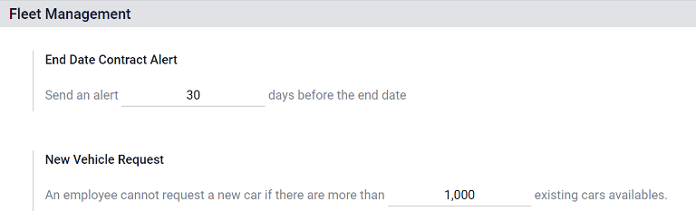

Fleet¶
This document outlines all of the configurations and settings for the Fleet application, including settings, manufacturers, vehicle models, and model categories.
Settings¶
To access the settings menu, go to . There are only two settings that need configuration, the vehicle contract end date alert delay, and a new vehicle request limit.
End Date Contract Alert¶
The End Date Contract Alert field defines an alert delay for the persons responsible for vehicle contracts. The responsible person(s) will receive an email informing them a vehicle contract is about to expire in the number of days defined in this field.
Note
To determine who the responsible person is for a contract, open an individual contract. The person listed as Responsible under the Contract Information section of the contract is the person who will receive the alert.
To access all contracts, navigate to and all contracts appear in the list. Click on a Contract to view it.
An individual contract can also be found by navigating to and clicking on an individual vehicle. On the vehicle form, click the Contracts smart button at the top of the page. The contract(s) associated with this vehicle only appears in the list. Click on an individual contract to open it. The Responsible person is listed on the contract.
New Vehicle Request¶
The New Vehicle Request field sets a limit on how many new vehicles are requested based on fleet availability. An employee filling out the salary configurator form (after being offered a position), will not be able to request a new car if the number of existing cars is greater than the number specified in the New Vehicle Request field. Enter the specific number limit for existing available cars in this field.
Example
If the New Vehicle Request limit is set to 20 vehicles, and there are 25 vehicles available, an employee would not be able to request a new vehicle. If there are only 10 cars available, then the employee would be able to request a new vehicle.
Manufacturers¶
Odoo Fleet comes pre-configured with sixty-six commonly used car and bicycle manufacturers in the database, along with their logos. To view the pre-loaded manufacturers, go to .
The manufacturers appear in a list view in alphabetical order. Each manufacturer’s card lists how many specific models are configured for each particular manufacturer. Odoo comes with forty six pre-configured models from four major auto manufacturers and one major bicycle manufacturer: Audi, BMW, Mercedes, Opel (cars), and Eddy Merckx (bicycle).

Add a manufacturer¶
To add a new manufacturer to the database, click Create. A manufacturer form will load. Only two pieces of information are needed, the Name of the manufacturer, and the logo. Type the name of the manufacturer in the name field, and select an image to upload for the logo. When the information is entered, click Save.
Vehicle Models¶
Many manufacturers have a variety of models that they produce. When adding a vehicle to the fleet, it is important to specify the vehicle model being added. Odoo comes with pre-configured car models from four major auto manufacturers, and one pre-configured bicycle model from one bicycle manufacturer: Audi, BMW, Mercedes, Opel (cars), and Eddy Merckx (bicycle). If a vehicle other than the pre-configured models from these manufacturers are part of a fleet, the model (and/or manufacturer) needs to be added to the database.
Preconfigured Models¶
The following models are pre-loaded in Odoo and do not need to be added to the database:
AUDI |
BMW |
Eddy Merckx |
Mercedes |
Opel |
|---|---|---|---|---|
A1 |
Serie 1 |
SanRemo76 |
Class A |
Agilia |
A3 |
Serie 3 |
Class B |
Ampera |
|
A4 |
Serie 5 |
Class C |
Antara |
|
A5 |
Serie 6 |
Class CL |
Astra |
|
A6 |
Serie 7 |
Class CLS |
AstraGTC |
|
A7 |
Serie Hybrid |
Class E |
Combo Tour |
|
A8 |
Serie M |
Class GL |
Corsa |
|
Q3 |
Serie X |
Class GLK |
Insignia |
|
Q5 |
Serie Z4 |
Class M |
Meriva |
|
Q7 |
Class R |
Mokka |
||
TT |
Class S |
Zafira |
||
Class SLK |
Zafira Tourer |
|||
Class SLS |
Add a new model¶
New vehicle models can easily be added to the database. To add a new model, navigate to . Click Create and a vehicle model form will load. Enter the following information on the form, then click Save. Be advised, some fields are specific to Belgian based companies, so not all fields or sections may be visible depending on the location of the company.
Model name: enter the model name in the field.
Manufacturer: select the manufacturer from the drop-down menu. If the manufacturer is not configured, type in the manufacturer and then click Create or Create & Edit.
Vehicle Type: select one of two preconfigured vehicle types, either Car or Bike, from the drop-down menu. The vehicle types are hardcoded in Odoo and are integrated with the Payroll application since vehicles can be part of an employee’s benefits. Adding additional vehicle types is not possible as it will affect payroll.
Category: select the category the vehicle is categorized under from the drop-down menu. To create a new category, type in the category and then click Create (new category).
Note
When the manufacturer is selected, the logo for the manufacturer will automatically load in the image box in the top right corner.
Information tab¶
Model¶
Seats Number: enter how many passengers the vehicle can accommodate.
Doors Number: enter the number of doors the vehicle has.
Color: enter the color of the vehicle.
Model Year: enter the year the vehicle was manufactured.
Trailer Hitch: check this box if the vehicle has a trailer hitch installed.
Salary¶
Note
The Salary section only appears for Belgian-based companies, and only if the company has their localization setting set to Belgium. The cost values are all monthly with the exception of the Catalog Value (VAT Incl.).
Can be requested: check this box if employees can request this model vehicle.
Catalog Value (VAT Incl.): enter the MSRP for the vehicle at the time of purchase or lease.
C02 fee: this value is automatically calculated based on Belgian laws and regulations, and cannot be modified. The value is based on the value entered in the CO2 Emissions field in the Engine section of the vehicle form.
Important
Modifying the CO2 Emissions field will adjust the value in the CO2 fee field.
Cost (Depreciated): enter the monthly cost for the vehicle, which appears in the salary configurator that is available to a future employee when they are offered a job position. This value impacts the gross and net salary of the employee who is assigned to the vehicle. This figure is depreciated over time according to local tax laws. The Cost (Depreciated) does not depreciate automatically on the vehicle model, it only depreciates based on the contract linked to a specific vehicle and not on the general model.
Total Cost (Depreciated): this value is the Cost (Depreciated) and the C02 fee fields combined, and also is depreciated over time.
Engine¶
Fuel Type: select the type of fuel the vehicle uses form the drop-down menu. The options are Diesel, Gasoline, Hybrid Diesel, Hybrid Gasoline, Plug-in Hybrid Diesel, Plug-in Hybrid Gasoline, CNG, LPG, Hydrogen, or Electric.
CO2 Emissions: enter the average carbon dioxide emissions the vehicle produces in grams per kilometer (g/km). This information is provided by the car manufacturer.
CO2 Standard: enter the standard amount of carbon dioxide in grams per kilometer (g/km) for a similar sized vehicle.
Transmission: select the transmission type from the drop-down menu, either Manual or Automatic.
Power: if the vehicle is electric or hybrid, enter the power the vehicle uses in kilowatts (kW).
Horsepower: enter the vehicle’s horsepower in this field.
Horsepower Taxation: enter the amount that is taxed based on the size of the vehicle’s engine. This is determined by local taxes and regulations, and varies depending on the location. It is recommended to check with the accounting department to ensure this value is correct.
Tax Deduction: this field auto-populates according to the engine specifications, and cannot be modified. The percentage is based on the localization settings and local tax laws.
Vendors tab¶
Vehicle specific vendors, such as car dealerships, are not listed separately from other vendors. The vendors that a vehicle can be purchased from also appear in the list of vendors used by the Purchase app.
The vendor(s) the vehicle can be purchased from may be added in this tab. To add a vendor, click Add, and a pop-up loads with a list of all the vendors currently in the database. Select the vendor to add by clicking the checkbox next to the vendor name, then click Select. There is no limit to the number of vendors that can be added to this list.
If a vendor is not in the database, add a vendor by clicking Create. A vendor form will load. Enter the information in the vendor tab, then click Save & Close to add the vendor and close the window, or Save & New to add the current vendor and create another new vendor.

Model Category¶
To best organize a fleet, it is recommended to have vehicle models housed under a specific category, to more easily see what kinds of vehicles are in the fleet. Model categories are set on the vehicle model form.
To view all the models currently set up, navigate to . All models are displayed in a list view.
Add a new model category¶
To add a new category, click Create. A new entry line appears at the bottom of the list. Type in the new category, then click Save to save the entry.
To reorganize how the categories appear in the list, click on the up and down arrows to the left of the category to be moved, and drag the line to the desired position. The order of the list does not affect the database in any way. However, it may be preferable to view the vehicle categories in a specific order, for example, by size, or the numbers of passengers the vehicle can carry.

See also